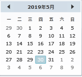

时间设置
公共交通安全管理平台部分功能需要设置日期和时间作为查询过滤条件。
以车辆的历史视频界面的时间设置为例进行说明。
Fig 18 车辆的历史视频
| 1. | 设置日期，目前支持两种方式：直接在“日期”的文本框中按照日期格式手动输入日期；或者单击“日期”文本框后的〖 
Fig 19 历史轨迹设置 |
| 2. | 设置时间，目前支持三种方式： （1）直接在“时间”的文本框中按照时间格式手动输入时间；
（2）在“时间”文本框中单击〖
（3）单击“时间”文本框后的〖〗图标，在弹出的时间选择框中选择特定时间点，单击〖〗完成时间点设置。
|